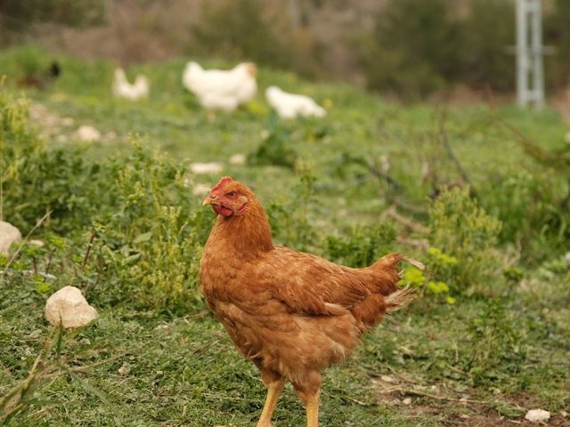
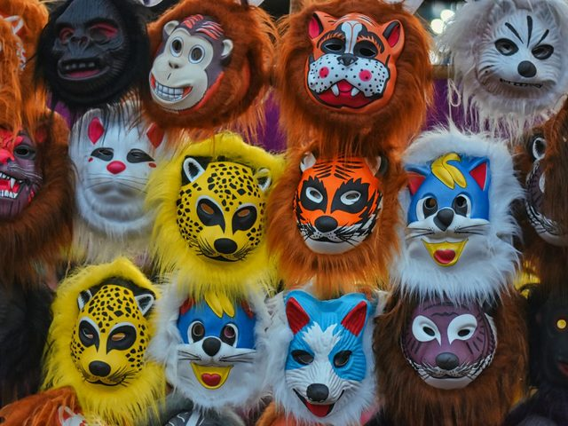
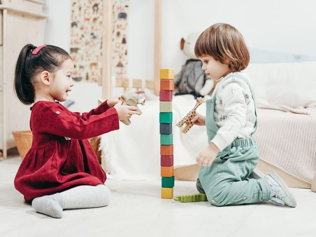
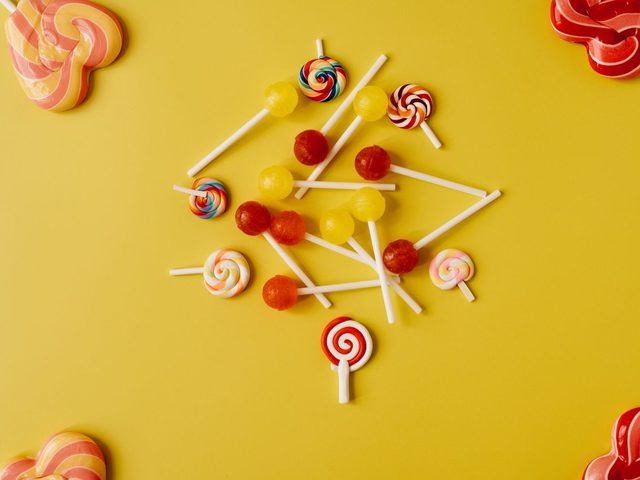
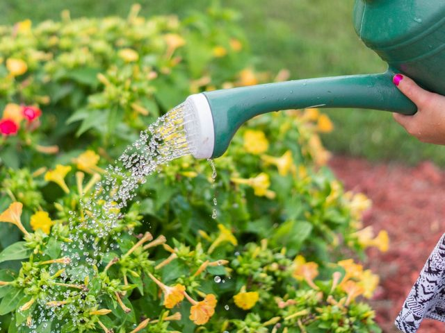

VOCABULARY · LALA WORD UNIT 5
A Small Mask, A Big Change．一字多義（五）
mask 是面具，也是口罩；chicken 是雞，也可以笑人「膽小鬼」。這個單元有 4 個主題單字、14 個更多單字，最後整理都是「很多」的 many／much／a lot of。
共 18 個單字．點 🔊 聽發音

1chickenn.
雞；雞肉；膽小鬼
複數 chickens
- 1n.雞Grandma keeps ten chickens on her farm.奶奶的農場養了十隻雞。
- 2n.雞肉I'd like chicken rice, please.我要一份雞肉飯。
- 3n.膽小鬼Come on, jump in! Don't be a chicken.快跳下來！別當膽小鬼。

2darkadj. / n.
天黑的；昏暗的；深色的；天黑；黑暗
dark - darker - darkest
- 1adj.天黑的；昏暗的It gets dark early in winter.冬天天黑得早。
- 2adj.深色的He is wearing a dark blue jacket.他穿著一件深藍色外套。
- 3n.天黑Come home before dark.天黑前回家。
- 4n.黑暗 in the dark 在黑暗中；被蒙在鼓裡My little sister is afraid of the dark.我妹妹怕黑。

3brightadj.
明亮的；鮮豔的；聰明的；樂觀的；開心的
bright - brighter - brightest
- 1adj.明亮的；鮮豔的The sun is very bright today.今天陽光很亮。
- 2adj.聰明的 (as) bright as a button 非常聰明Lily is a bright student.Lily 是個聰明的學生。
- 3adj.樂觀的；開心的 look on the bright side 往好處想Always look on the bright side.凡事要往好處想。

4maskn.
面具；口罩；掩飾
複數 masks
- 1n.面具The kids wore animal masks at the party.孩子們在派對上戴動物面具。
- 2n.口罩Please wear a mask on the bus.搭公車請戴口罩。
- 3n.掩飾His smile was a mask. He was really sad.他的微笑只是掩飾，他其實很難過。
5glassn.
玻璃；玻璃杯；眼鏡（glasses）
複數 glasses
- 1n.玻璃The window is made of glass.窗戶是玻璃做的。
- 2n.玻璃杯 a glass of 一杯Can I have a glass of water?可以給我一杯水嗎？
- 3n.眼鏡（glasses）I can't see well without my glasses.沒戴眼鏡我看不清楚。

6hotadj.
熱的；辣的；熱門的
hot - hotter - hottest
- 1adj.熱的It's so hot today. Let's go swimming.今天好熱，我們去游泳吧。
- 2adj.辣的This curry is too hot for me.這個咖哩對我來說太辣了。
- 3adj.熱門的This game is the hot new toy this year.這個遊戲是今年最熱門的新玩具。

7kidn. / v.
小孩；年輕人；開玩笑；嘲笑；拿…開玩笑
kid - kidded - kidded - kidding
- 1n.小孩The kids are playing in the park.孩子們在公園玩。
- 2n.年輕人He was just a kid when he started his company.他開公司的時候還只是個年輕人。
- 3v.開玩笑I'm just kidding. Don't be angry.我只是開玩笑，別生氣。
- 4v.嘲笑；拿…開玩笑 kid + 人 + about 拿…開某人玩笑My brother always kids me about my short hair.我哥哥老是拿我的短髮開玩笑。

8lastadj. / v.
上一個的；最後的；最不可能的；持續；維持
last - lasted - lasted - lasting
- 1adj.上一個的 last night / week / year 昨晚／上週／去年I went to Kenting last summer.我去年夏天去墾丁。
- 2adj.最後的 last name 姓December is the last month of the year.十二月是一年的最後一個月。
- 3adj.最不可能的He is the last person to tell a lie.他是最不可能說謊的人。
- 4v.持續；維持The rain lasted for three days.雨下了三天。

9milkn. / v.
牛奶；奶；（植物的）白色汁液；擠奶；榨取（利益）
milk - milked - milked - milking
- 1n.牛奶；奶I drink a glass of milk every morning.我每天早上喝一杯牛奶。
- 2n.（植物的）白色汁液 soy milk 豆漿；coconut milk 椰奶Soy milk is popular in Taiwan.豆漿在臺灣很受歡迎。
- 3v.擠奶The farmer milks the cows every morning.農夫每天早上擠牛奶。
- 4v.榨取（利益）Some shops milk tourists for money.有些店家專門坑觀光客的錢。

10partn. / v.
部分；零件；角色；分開；離別
part - parted - parted - parting
- 1n.部分 in part 部分地Part of the cake is gone.蛋糕少了一部分。
- 2n.零件The car needs some new parts.這輛車需要一些新零件。
- 3n.角色Tom played the part of the king in the play.Tom 在戲裡演國王。
- 4v.分開；離別The two friends parted at the train station.兩個朋友在火車站分別。

11platen. / v.
盤子；一盤；板子；車牌；裝盤
plate - plated - plated - plating
- 1n.盤子；一盤 a plate of 一盤…She ate a plate of fried noodles.她吃了一盤炒麵。
- 2n.板子；車牌 license plate 車牌Can you see the car's license plate?你看得到那台車的車牌嗎？
- 3v.裝盤The chef plated the steak with some vegetables.主廚把牛排和蔬菜一起裝盤。

12shopv. / n.
購物；買東西；商店；工作坊；修理廠
shop - shopped - shopped - shopping
- 1v.購物；買東西 shop for 購買；window-shopping 逛街只看不買Mom shops for food every Saturday.媽媽每週六去買菜。
- 2n.商店There is a coffee shop near my school.我學校附近有一家咖啡店。
- 3n.工作坊；修理廠Dad took the car to the shop.爸爸把車送去修車廠。

13showv. / n.
給…看；展示；顯示；證明；出現（show up）；節目；表演；展覽
show - showed - shown（showed） - showing
- 1v.給…看；展示 show + 人 + 物 = show + 物 + to + 人Show me your new phone.給我看你的新手機。
- 2v.顯示；證明The test shows that you studied hard.這次考試證明你很用功。
- 3v.出現（show up） show up 出現He didn't show up for the party.他沒有出現在派對上。
- 4n.節目；表演My favorite TV show starts at eight.我最愛的電視節目八點開始。
- 5n.展覽We went to a car show last weekend.我們上週末去看車展。

14sickadj. / n.
生病的；想吐的；噁心的；病假；病人（the sick）
sick - sicker - sickest
- 1adj.生病的I can't go to school. I'm sick.我不能去上學，我生病了。
- 2adj.想吐的；噁心的 carsick 暈車；seasick 暈船；homesick 想家I feel sick on long bus rides.坐長途公車我會想吐。
- 3n.病假 on sick leave 請病假Ms. Lin is on sick leave today.林老師今天請病假。
- 4n.病人（the sick）Doctors and nurses take care of the sick.醫生和護理師照顧病人。

15stilladv. / adj.
仍然；還；儘管如此；更加；靜止的
- 1adv.仍然；還Are you still hungry?你還餓嗎？
- 2adv.儘管如此It rained hard. Still, we had fun.雨下得很大，但我們還是玩得很開心。
- 3adv.更加The second test was still harder.第二次考試更難。
- 4adj.靜止的 keep / stay still 保持不動Sit still and listen.坐好別動，注意聽。

16sweetadj. / n.
甜的；貼心的；美好的；糖果
sweet - sweeter - sweetest
- 1adj.甜的 have a sweet tooth 愛吃甜食This watermelon is very sweet.這顆西瓜很甜。
- 2adj.貼心的It's sweet of you to help me.你幫我真貼心。
- 3adj.美好的Winning the game felt so sweet.贏得比賽的感覺真美好。
- 4n.糖果Don't eat too many sweets.不要吃太多糖果。
17thirstyadj.
口渴的；渴望的
thirsty - thirstier - thirstiest
- 1adj.口渴的I'm thirsty. Can I have some water?我口渴了，可以喝點水嗎？
- 2adj.渴望的 be thirsty for 渴望The boy is thirsty for his parents' love.那個男孩渴望父母的愛。

18watern. / v.
水；水域（waters）；澆水；流口水；流眼淚
water - watered - watered - watering
- 1n.水Drink more water on hot days.天氣熱要多喝水。
- 2n.水域（waters）Many fish live in these waters.很多魚住在這片水域。
- 3v.澆水Can you water the plants for me?你可以幫我澆花嗎？
- 4v.流口水The smell of the food made my mouth water.食物的香味讓我流口水。
- 5v.流眼淚Cutting onions makes my eyes water.切洋蔥讓我流眼淚。
FOCUS
易混淆字：都是「很多」
| 單字 | 用法 | 例句 |
|---|---|---|
| many | 接可數名詞（複數）；比較級 more、最高級 most | How many apples do you want? |
| much | 接不可數名詞；也可以修飾動詞、比較級 | How much milk is there?／It's much hotter today. |
| a lot of | 可數、不可數都可以接（＝ lots of） | I have a lot of homework. |
| a lot | 副詞，放在動詞後面 | She talks a lot. |
否定句、疑問句常用 many／much；肯定句口語常用 a lot of。
FOCUS
一字多義：最常見 vs. 容易忽略的意思
| 單字 | 最常見的意思 | 容易忽略的意思 |
|---|---|---|
| chicken | 雞；雞肉 | 膽小鬼 |
| mask | 面具；口罩 | 掩飾 |
| bright | 明亮的 | 聰明的 |
| glass | 玻璃；玻璃杯 | glasses 眼鏡 |
| hot | 熱的 | 辣的；熱門的 |
| kid | 小孩 | 開玩笑 |
| last | 最後的 | 持續 |
| part | 部分 | 角色；分開 |
| still | 仍然 | 靜止的 |
| water | 水 | 澆水；流口水 |
FOCUS
常用片語
| 片語 | 意思 | 例句 |
|---|---|---|
| in the dark | 在黑暗中；被蒙在鼓裡 | Nobody told me. I was in the dark. |
| look on the bright side | 往好處想 | Look on the bright side. You learned a lot. |
| just kidding | 開玩笑的 | I'm just kidding! |
| show up | 出現 | She showed up at ten. |
| have a sweet tooth | 愛吃甜食 | My dad has a sweet tooth. |
| stay still | 保持不動 | Stay still for the photo. |